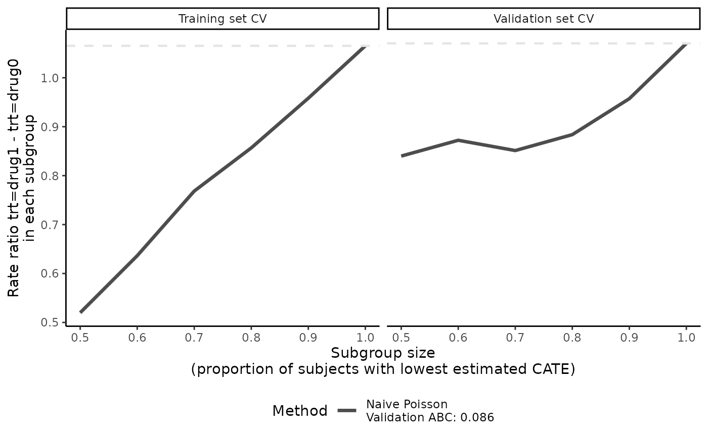
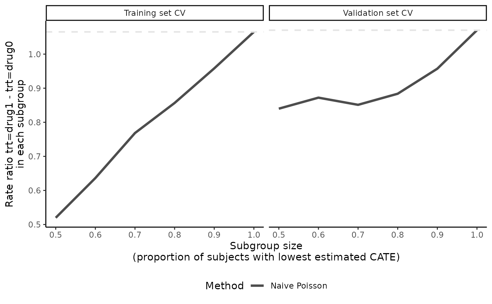
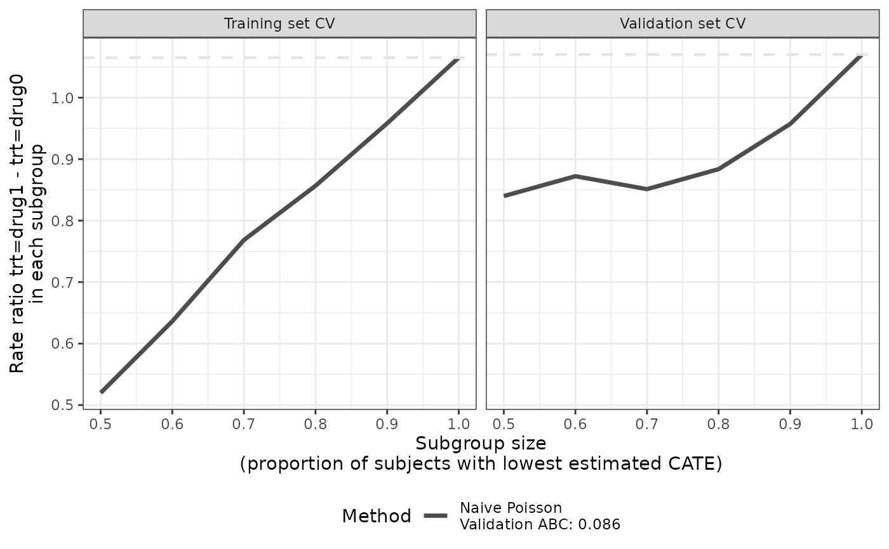
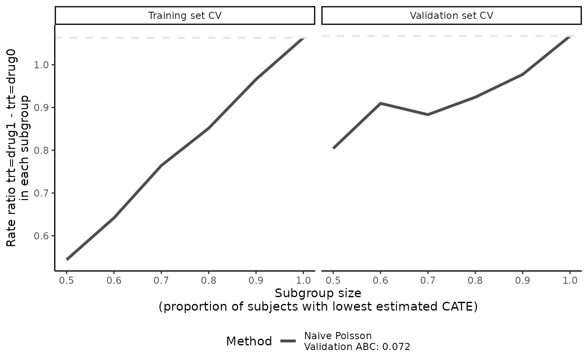
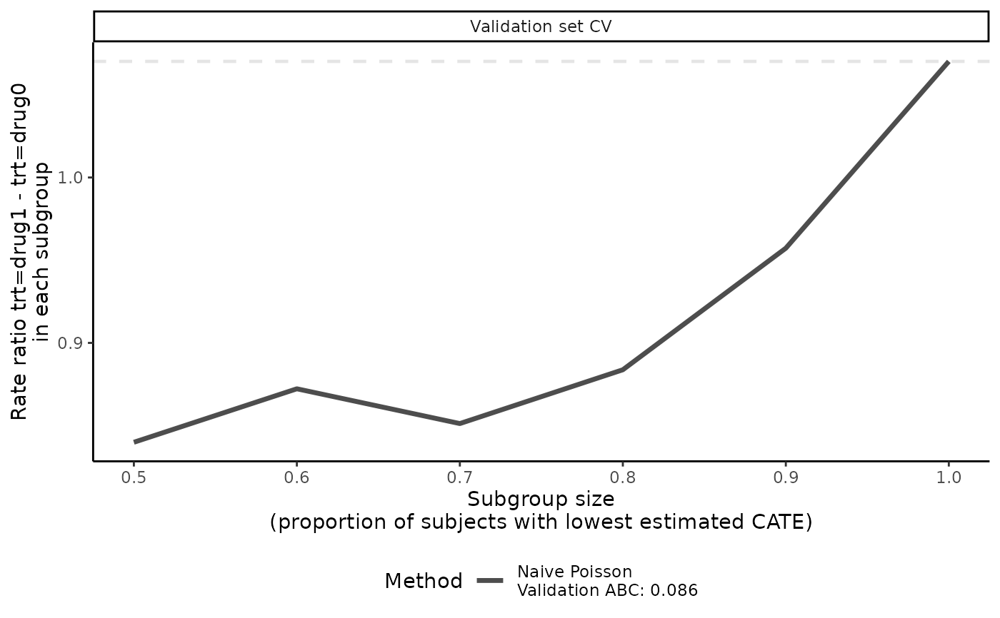
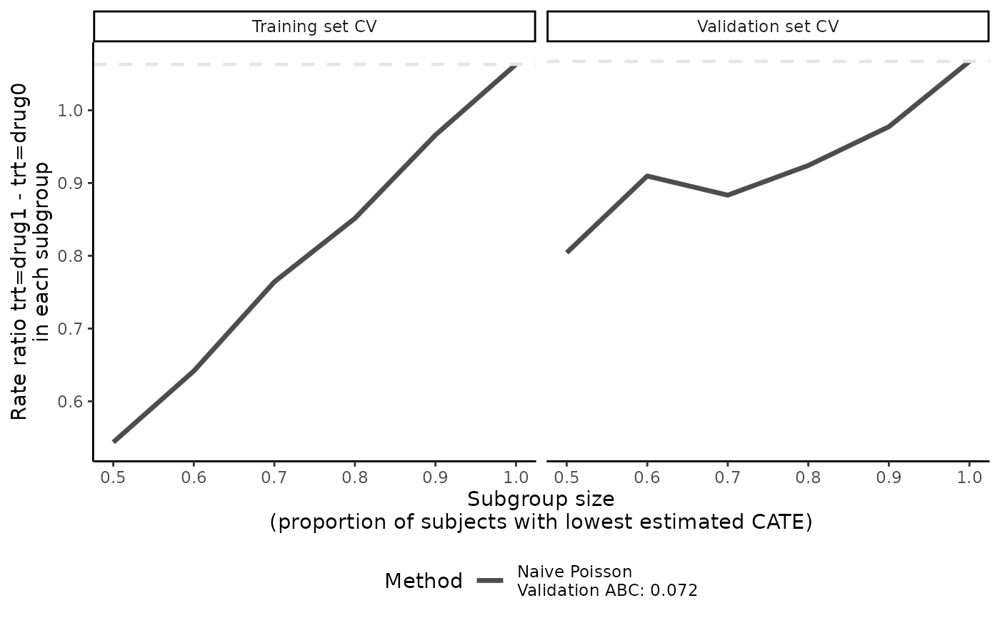
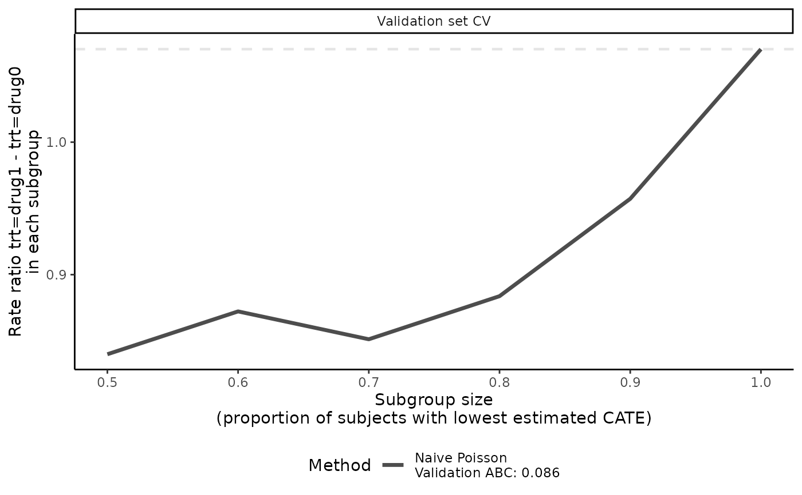

Two side-by-side line plots of validation curves from the "precmed" object
Source: R/crossv.R
plot.precmed.RdProvides validation curves in two side-by-side plots, visualizing the estimated ATEs in a series
of nested subgroups in the training set and validation set separately, where each line represents
one scoring method specified in catecv() or catecvmean(). This should be run
only after results of catecv() or catecvmean() have been obtained.
Usage
# S3 method for precmed
plot(
x,
cv.i = NULL,
combine = "mean",
show.abc = TRUE,
valid.only = FALSE,
plot.hr = FALSE,
ylab = NULL,
legend.position = "bottom",
xlim = NULL,
title = waiver(),
theme = theme_classic(),
...
)Arguments
- x
An object of class
"precmed".- cv.i
A positive integer indicating the index of the CV iteration results to be plotted. Allowed values are: a positive integer \(<=\)
cv.nincatecv()orNULL. Ifcv.i = NULL, the results across all CV iterations are combined according tocombineand then plotted. Default isNULL.- combine
A character value indicating how to combine the estimated ATEs across all CV iterations into a validation curve for each nested subgroup, separately for the training and validation results. Allowed values are:
'mean'or'median'. Used only ifcv.i = NULL. Default is'mean'.- show.abc
A logical value indicating whether to show the ABC statistics in the validation set. Used only if
x$abc = TRUEandxlimis not limited to a smaller range (i.e.,xlim = NULLor equal to the entirex$prop.onlyhighrange). Ifcv.iis NULL, ABC statistics will be based on the combined CV iterations. Ifcv.iis an integer, ABC statistics will be based solely on that CV iteration. Default isTRUE.- valid.only
A logical value indicating whether only the validation curves in the validation set should be plotted (
TRUE). Otherwise, the validation curves in both the training and validation sets are plotted side-by-side (FALSE). Default isFALSE.- plot.hr
A logical value indicating whether the hazard ratios should be plotted in the validation curves (
TRUE). Otherwise, the restricted mean time lost is plotted (FALSE). This argument is only applicable to survival outcomes. Default isFALSE.- ylab
A character value for the y-axis label to describe what the ATE is. Default is
NULL, which creates a default y-axis label based on available data.- legend.position
A character value for the legend position argument to be passed to
ggplotobject. Default is'bottom'.- xlim
A numeric value for the range of the x-axis. Default is
NULL, which means there is no range specified.- title
The text for the title
- theme
Defaults to
theme_classic(). Other options includetheme_grey(),theme_bw(),theme_light(),theme_dark(), andtheme_void()- ...
Other parameters
Value
Returns two side-by-side line plots, one of which shows the validation curves of the training
sets and the other the validation curves in the validation sets. A gray horizontal dashed line of
overall ATE is included as a reference. ABC statistics will be added to the legend if
show.abc = TRUE.
Details
plot() takes in outputs from catecv() and generates two plots
of validation curves side-by-side, one for the training set and one for validation set.
Separate validation curves are produced for each scoring method specified via score.method
in catecv() or catecvmean().
The validation curves (and ABC statistics, if applicable) can help compare the performance of different scoring methods in terms of discerning potential treatment heterogeneity in subgroups with internal validation. Steeper validation curves in the validation set suggest presence of treatment effect heterogeneity (and the ability of the scoring methods to capture it) while flat validation curves indicate absence of treatment effect heterogeneity (or inability of the scoring method to capture it).
References
Yadlowsky, S., Pellegrini, F., Lionetto, F., Braune, S., & Tian, L. (2020). Estimation and validation of ratio-based conditional average treatment effects using observational data. Journal of the American Statistical Association, 1-18. https://www.tandfonline.com/doi/full/10.1080/01621459.2020.1772080
Examples
# \donttest{
# Count outcome
eval_1 <- catecv(response = "count",
data = countExample,
score.method = "poisson",
cate.model = y ~ age + female + previous_treatment +
previous_cost + previous_number_relapses + offset(log(years)),
ps.model = trt ~ age + previous_treatment,
higher.y = FALSE,
cv.n = 5)
#> Warning: Variable trt was recoded to 0/1 with drug0->0 and drug1->1.
# default setting
plot(eval_1)

# turn off ABC annotation
plot(eval_1, show.abc = FALSE)

# use a different theme
plot(eval_1, theme = ggplot2::theme_bw())

# plot the validation curves from the 2nd CV iteration instead of the mean
# of all validation curves
plot(eval_1, cv.i = 2)
 # median of the validation curves
plot(eval_1, combine = "median")

# plot validation curves in validation set only
plot(eval_1, valid.only = TRUE)

# Survival outcome
library(survival)
tau0 <- with(survivalExample,
min(quantile(y[trt == "drug1"], 0.95), quantile(y[trt == "drug0"], 0.95)))
eval_2 <- catecv(response = "survival",
data = survivalExample,
score.method = c("poisson", "randomForest"),
cate.model = Surv(y, d) ~ age + female + previous_cost +
previous_number_relapses,
ps.model = trt ~ age + previous_treatment,
initial.predictor.method = "randomForest",
ipcw.model = ~ age + previous_cost + previous_treatment,
tau0 = tau0,
cv.n = 5,
seed = 999)
#> Warning: Variable trt was recoded to 0/1 with drug0->0 and drug1->1.
# default setting, plot RMTL ratios in both training and validation sets
plot(eval_2)
# plot hazard ratio
plot(eval_2, plot.hr = TRUE)
#> Warning: ABC will not be shown in hazard ratio plot.
# }
# median of the validation curves
plot(eval_1, combine = "median")

# plot validation curves in validation set only
plot(eval_1, valid.only = TRUE)

# Survival outcome
library(survival)
tau0 <- with(survivalExample,
min(quantile(y[trt == "drug1"], 0.95), quantile(y[trt == "drug0"], 0.95)))
eval_2 <- catecv(response = "survival",
data = survivalExample,
score.method = c("poisson", "randomForest"),
cate.model = Surv(y, d) ~ age + female + previous_cost +
previous_number_relapses,
ps.model = trt ~ age + previous_treatment,
initial.predictor.method = "randomForest",
ipcw.model = ~ age + previous_cost + previous_treatment,
tau0 = tau0,
cv.n = 5,
seed = 999)
#> Warning: Variable trt was recoded to 0/1 with drug0->0 and drug1->1.
# default setting, plot RMTL ratios in both training and validation sets
plot(eval_2)
# plot hazard ratio
plot(eval_2, plot.hr = TRUE)
#> Warning: ABC will not be shown in hazard ratio plot.
# }